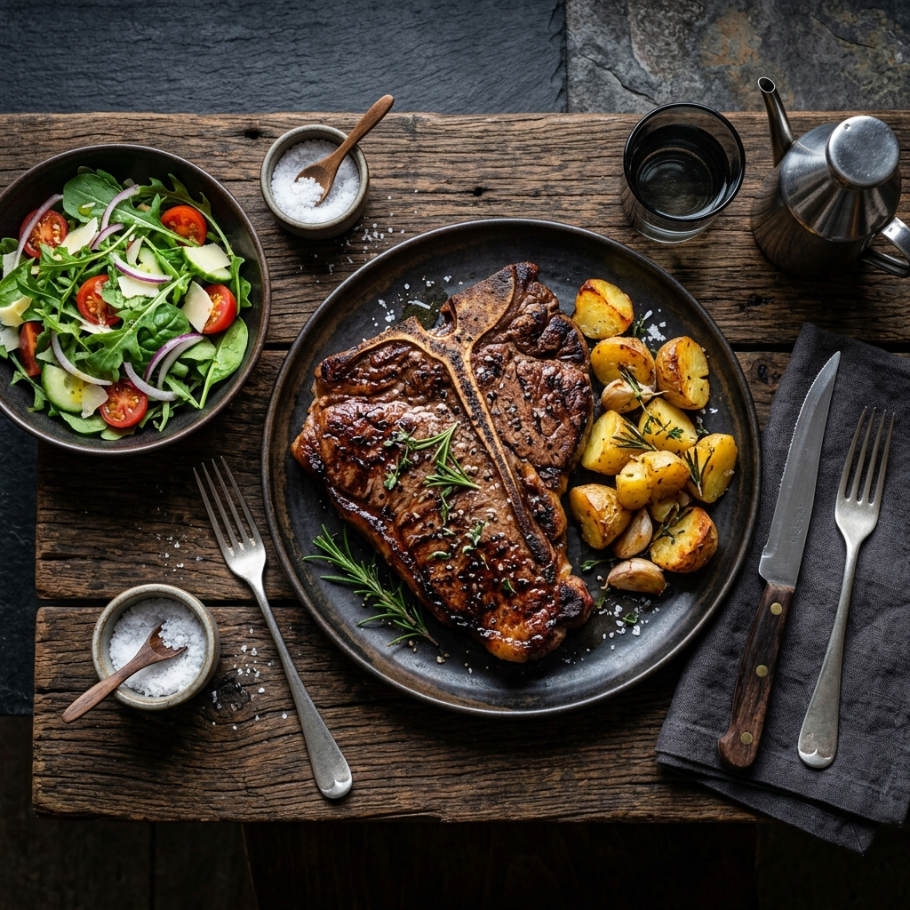
Intelligent Fueling · Pilonul 3
CARTEA DE
REȚETE
Andy · 7 zile · 2800 kcal · 220g Proteină Fixă
CUM
FOLOSEȘTI
Ai aici 7 zile complete, gata calculate pe porția ta. Baza pentru reducerea inflamației și arderea grăsimii viscerale. Fără meniuri de dietă plictisitoare, doar combustibil adevărat. 28 de rețete absolut unice, diversificate și gândite pentru randament maxim.
Bază / zi2800
Proteină220g
Carbohidrați277g
Grăsimi90g
Zi Ușoară (Odihnă)2600Aceleași mese, dar tai un carbohidrat (fără orez/pâine suplimentară).
Zi cu Antrenament2800Baza din acest plan. Mesele sunt calculate pe acest necesar masiv.
REGULILE CĂRȚII
1Scutul de seară este obligatoriu. Indiferent de zi, seara mănânci proteina lentă cu legume. Asta taie pofta de dulce și poftele incontrolabile nocturne.
2Un singur carbohidrat la masă. Alegi ori pâine, ori cartofi, ori orez. Niciodată împreună. Le concentrezi în jurul antrenamentelor, nu seara.
3Hidratarea e critică. Ai nevoie de 4-4.5 L de apă pe zi. Apa scade pulsul, ajută hematocritul și taie foamea falsă de seară.
4Proteina se mănâncă prima. La orice masă, mănânci proteina, apoi legumele, abia apoi carbohidratul. Glicemia rămâne stabilă.
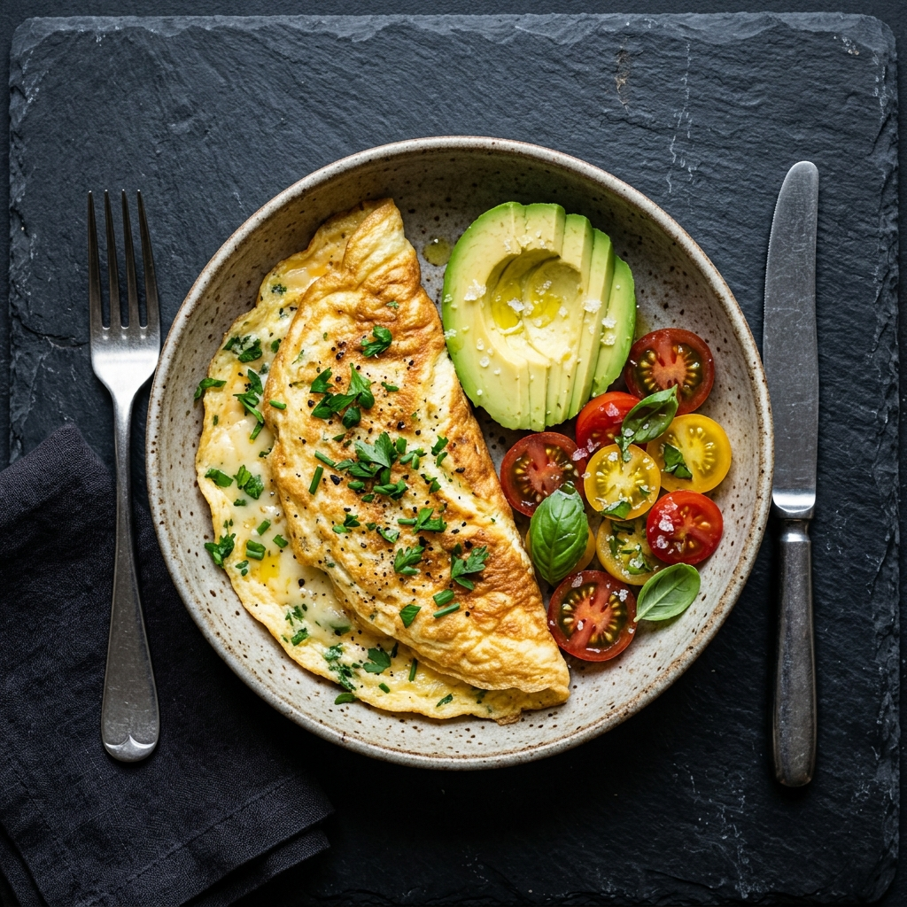
Z1 · MIC DEJUN
OMLETĂ CU AVOCADO
ȘI ROȘII
EnergieDimineața⏱ 10 min
Calorii650
Proteine45G
Carbohidrați40G
Grăsimi30G
Ingrediente
Ouă3 buc
Avocado1/2 buc
Pâine integrală prăjită2 felii
Roșii proaspete150 g
Execuție
01Bate ouăle și fă o omletă subțire, fără ulei.
02Taie avocado felii și pune-l peste omletă.
03Servește cu roșii proaspete și pâinea prăjită.
PONTGrăsimile din avocado țin testosteronul sus și foamea la distanță.
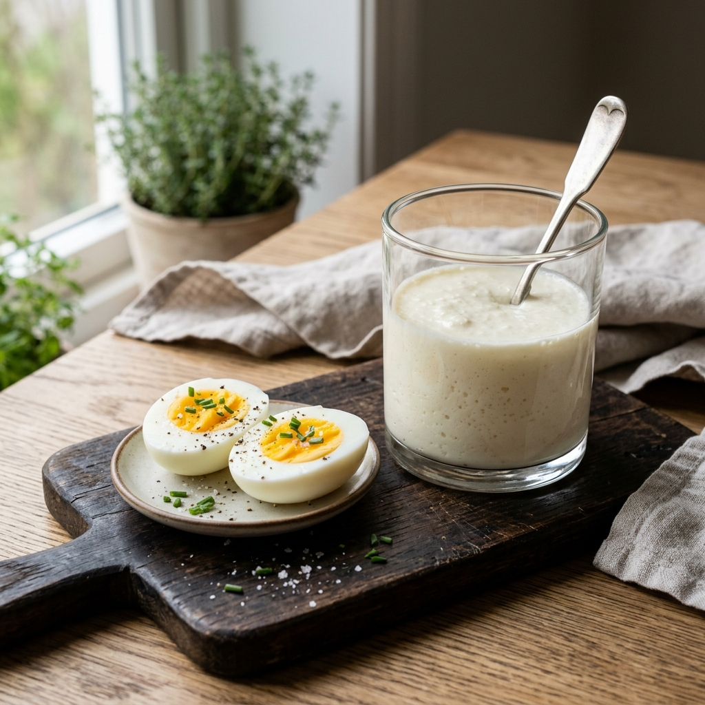
Z1 · GUSTARE
OUĂ FIERTE
ȘI KEFIR
Rapid16:30⏱ 1 min
Calorii300
Proteine30G
Carbohidrați15G
Grăsimi15G
Ingrediente
Ouă fierte2 buc
Kefir 2%300 ml
Execuție
01Fierbe ouăle de dimineață și ia-le la tine.
02La 16:30 le cureți și le mănânci.
03Bei kefirul rece. O injecție masivă de proteină.
PONTCombinația de ou și lactate ține foamea la distanță până la cină.

Z1 · PRÂNZ
PUI LA GRĂTAR
CU OREZ ȘI SALATĂ
Meal PrepPrânz⏱ 20 min
Calorii750
Proteine65G
Carbohidrați80G
Grăsimi10G
Ingrediente
Piept de pui250 g
Orez basmati (crud)80 g
Salată mixtă cu lămâie150 g
Sare, piper, boiadupă gust
Execuție
01Trage pieptul de pui la grătar sau în tigaie.
02Fierbe orezul simplu în apă cu puțină sare.
03Fă o salată mare alături. Mănâncă tot.
PONTPoți face 3-4 porții de pui și orez odată pentru meal prep.

Z1 · CINĂ
SCUTUL
TELEMEA CU ROȘII
Scut Anti-BingeSeara⏱ 3 min
Calorii450
Proteine35G
Carbohidrați15G
Grăsimi25G
Ingrediente
Telemea de vacă sau Feta120 g
Roșii proaspete150 g
Castravete1 buc
Ulei de măsline1 lingură
Execuție
01Taie brânza în cuburi și pune-o peste roșiile tăiate.
02Toarnă uleiul de măsline deasupra și puțin oregano.
03Mănâncă fără pâine. Asta taie pofta de dulce instant.
PONTCazeina din telemea se absoarbe lent noaptea.
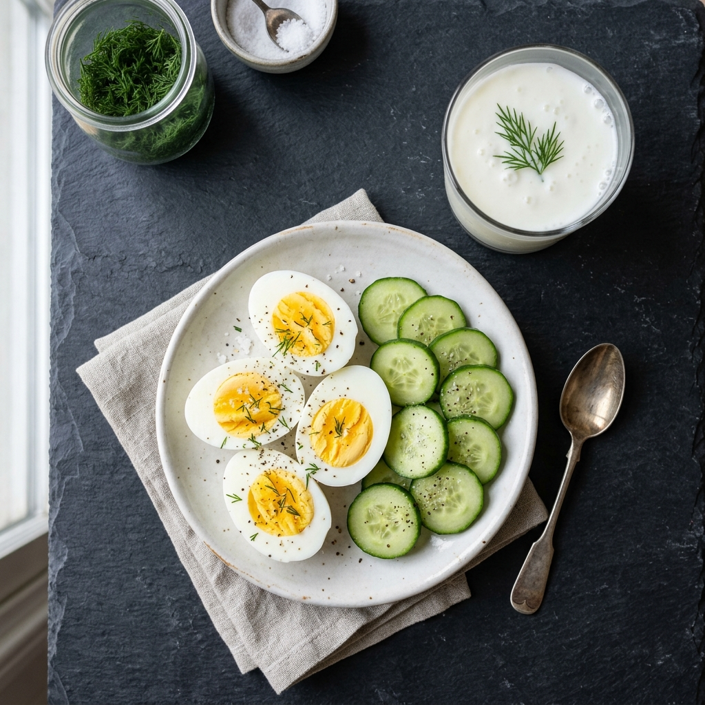
Z2 · MIC DEJUN
OUĂ FIERTE
CU CASTRAVEȚI
ClasicDimineața⏱ 5 min
Calorii550
Proteine45G
Carbohidrați30G
Grăsimi25G
Ingrediente
Ouă fierte3 buc
Castravete1 buc mare
Kefir 2%300 ml
Pâine integrală1 felie
Execuție
01Fierbe ouăle tare (sau mediu, cum preferi).
02Taie castravetele felii.
03Mănâncă ouăle, bea kefirul. Simplu și extrem de eficient.
PONTProteină pură și hidratare la prima oră. Zero zahăr, zero crash glicemic.
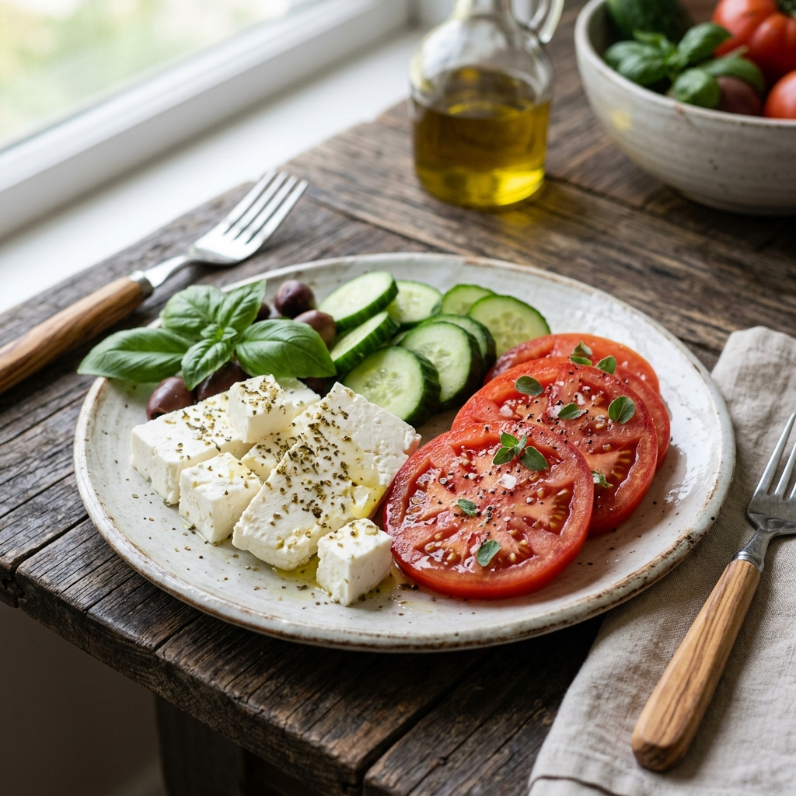
Z2 · GUSTARE
BRÂNZĂ FETA
CU ROȘII
Sățios16:30⏱ 3 min
Calorii350
Proteine25G
Carbohidrați10G
Grăsimi25G
Ingrediente
Brânză Feta sau Telemea100 g
Roșii150 g
Ulei de măsline1 linguriță
Execuție
01Taie brânza cubulețe sau feliuțe subțiri.
02Feliază roșiile și așează-le alături.
03Pune puțin ulei de măsline deasupra și sare.
PONTO variantă excelentă de volum rapid când nu ai timp să gătești.
MUȘCHI DE VITĂ
CU CARTOFI AURII
PremiumPrânz⏱ 20 min
Calorii800
Proteine65G
Carbohidrați60G
Grăsimi30G
Ingrediente
Mușchi de vită slab250 g
Cartofi aurii la cuptor250 g
Salată verde cu semințe100 g
Zeamă de lămâie1 lingură
Execuție
01Gătește carnea la tigaie încinsă.
02Pune cartofii la air-fryer sau cuptor.
03Adaugă salata alături. O masă perfect echilibrată.
PONTVita este o sursă imensă de fier și creatină naturală.

Z2 · CINĂ
KEFIR
RECE
InstantSeara⏱ 0 min
Calorii250
Proteine20G
Carbohidrați20G
Grăsimi10G
Ingrediente
Kefir simplu 2%500 ml
Sare grunjoasăun praf
Execuție
01Când ești prea obosit pentru salate.
02Pui un praf de sare în paharul de kefir.
03Îl bei și mergi la somn liniștit.
PONTZero pregătire, aport maxim de proteină lentă.

Z3 · MIC DEJUN
OMLETĂ CU PÂINE
INTEGRALĂ
VolumDimineața⏱ 10 min
Calorii600
Proteine45G
Carbohidrați50G
Grăsimi25G
Ingrediente
Ouă3 buc
Avocado1/2 buc
Pâine integrală cu semințe2 felii mari
Sare și piperdupă gust
Execuție
01Fă o omletă clasică, pliată în două.
02Așează feliile de avocado lângă, cu sare grunjoasă.
03Pâinea o poți prăji ușor. E o masă densă, de antrenament greu.
PONTNu te feri de gălbenușuri, sunt pline de nutrienți esențiali pentru recuperare.
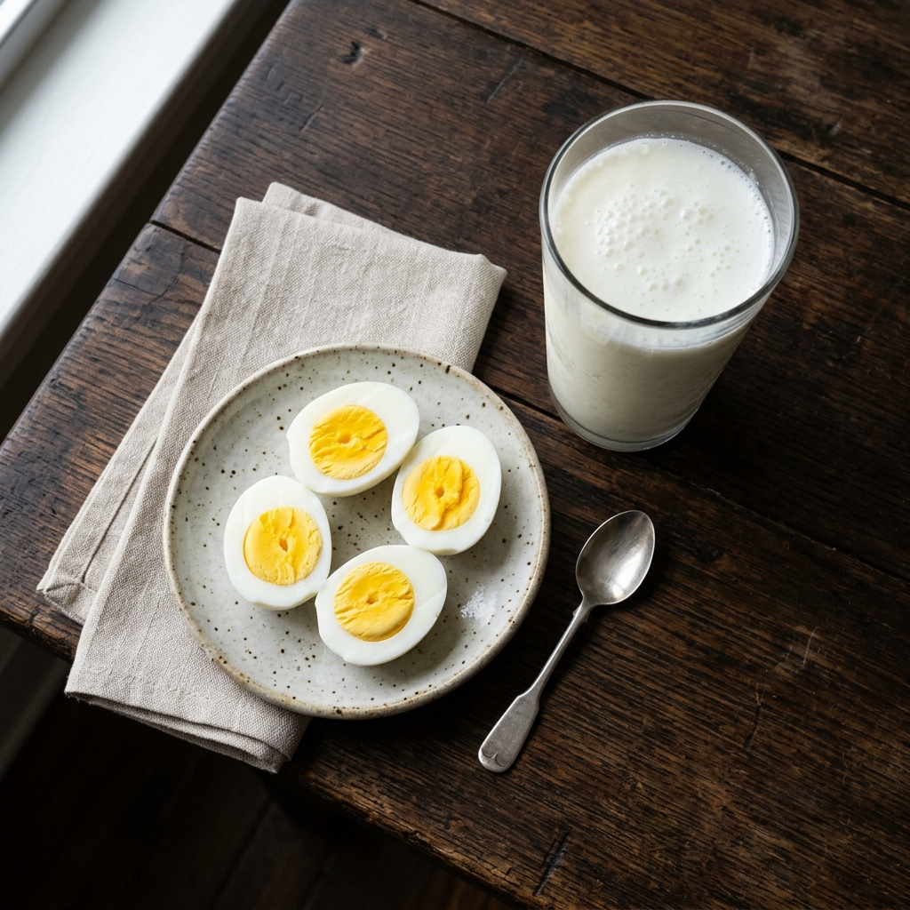
Z3 · GUSTARE
KEFIR ȘI
OUĂ FIERTE
Proteic16:30⏱ 1 min
Calorii300
Proteine30G
Carbohidrați15G
Grăsimi15G
Ingrediente
Ouă fierte tare2 buc
Kefir simplu300 ml
Execuție
01Taie ouăle fierte pe jumătate.
02Mănâncă-le și bea kefirul direct din pahar.
03Cea mai curată gustare posibilă.
PONTDacă nu ai timp să mănânci, bea doar kefirul. Nu sări complet peste masă.
PUI CU OREZ
ȘI BROCCOLI
CombustibilPrânz⏱ 20 min
Calorii750
Proteine65G
Carbohidrați80G
Grăsimi10G
Ingrediente
Piept de pui fâșii250 g
Orez basmati (crud)80 g
Broccoli fiert/abur150 g
Condimente de puidin plin
Execuție
01Taie puiul fâșii, condimentează-l și trage-l la tigaie.
03Opărește broccoli-ul scurt. Pune totul pe o farfurie mare.
PONTBroccoli e ideal pentru echilibrarea hormonilor masculini.
PEȘTE ALB
LA CUPTOR
UșorSeara⏱ 20 min
Calorii450
Proteine50G
Carbohidrați15G
Grăsimi15G
Ingrediente
Pește alb (cod sau șalău)250 g
Legume la cuptor200 g
Lămâie1 buc mare
Execuție
01Bagă peștele la cuptor pe foaie de copt alături de legume.
02La final stoarce multă lămâie peste el.
03Volum masiv și digestie ușoară pentru seară.
PONTPeștele alb este proteina perfectă pentru cină.
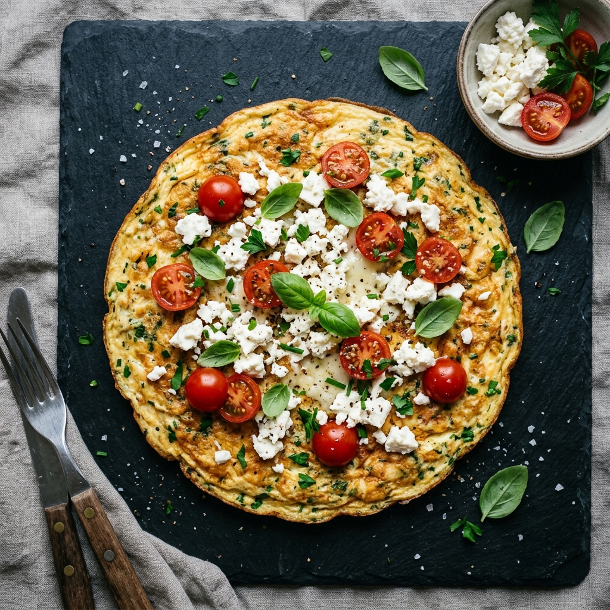
Z4 · MIC DEJUN
OMLETĂ CU BRÂNZĂ
ȘI ROȘII CHERRY
SățiosDimineața⏱ 8 min
Calorii650
Proteine50G
Carbohidrați20G
Grăsimi35G
Ingrediente
Ouă3 buc
Telemea sau Feta60 g
Roșii cherry100 g
Verdeață proaspătă1 legătură
Execuție
01Bate ouăle cu verdeața tocată.
02Pune amestecul în tigaie și lasă să se facă ca o clătită plată.
03Presară brânza fărâmițată și roșiile cherry tăiate deasupra.
PONTBrânza topită peste omletă dă un gust excepțional. Nu ai nevoie de pâine la masa asta.
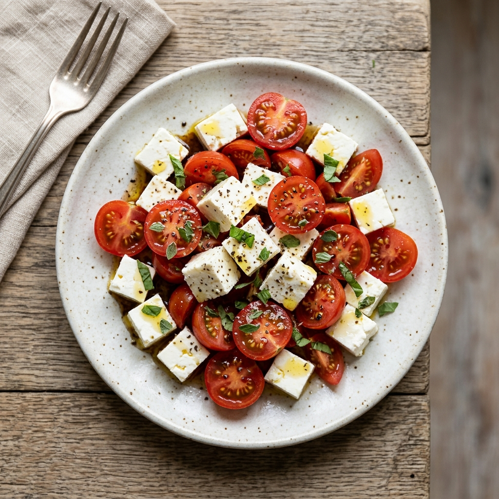
Z4 · GUSTARE
TELEMEA CUBURI
CU ULEI DE MĂSLINE
Keto Vibe16:30⏱ 2 min
Calorii380
Proteine25G
Carbohidrați8G
Grăsimi30G
Ingrediente
Telemea slabă100 g
Roșii cherry100 g
Ulei de măsline1 linguriță
Oreganoun praf
Execuție
01Taie brânza în cuburi mici.
02Pune roșiile cherry tăiate pe jumătate.
03Dresează totul cu ulei de măsline și oregano.
PONTGrăsimile de calitate te ajută să gândești mai limpede la birou.
SOMON LA CUPTOR
CU CARTOFI
Omega 3Prânz⏱ 25 min
Calorii780
Proteine55G
Carbohidrați50G
Grăsimi35G
Ingrediente
File de somon250 g
Cartofi baby250 g
Salată verde100 g
Lămâie1 buc
Execuție
01Bagă somonul la cuptor 20 minute la 200°C.
02Cartofii baby pot fi fierți sau puși în cuptor odată cu somonul.
03Mănâncă cu salată verde și multă lămâie.
PONTGrăsimile din somon scad masiv inflamația din corp.
SALATĂ CU FETA
ȘI CASTRAVEȚI
VolumSeara⏱ 5 min
Calorii450
Proteine30G
Carbohidrați20G
Grăsimi25G
Ingrediente
Telemea / Feta120 g
Castraveți verzi, Roșii200 g
Ceapă roșiecâteva felii
Măsline5-6 buc
Execuție
01Aruncă legumele tăiate într-un bol imens.
02Pune brânza fărâmițată deasupra.
03Dresează cu ulei și lămâie. Mănâncă tot.
PONTCreierul vede un bol imens de mâncare și oprește foamea.

Z5 · MIC DEJUN
CLĂTITE PROTEICE
CU AFINE
DesertDimineața⏱ 15 min
Calorii650
Proteine45G
Carbohidrați55G
Grăsimi20G
Ingrediente
Pudră proteică vanilie1 cupă
Ouă2 buc
Făină de ovăz50 g
Afine proaspete100 g
Miere1 linguriță
Execuție
01Amestecă pudra, ouăle și ovăzul până la omogenizare.
02Trage clătitele într-o tigaie cu puțin ulei de cocos.
03Pune afinele și mierea deasupra.
PONTCombustibilul suprem pentru antrenamentele grele de picioare.
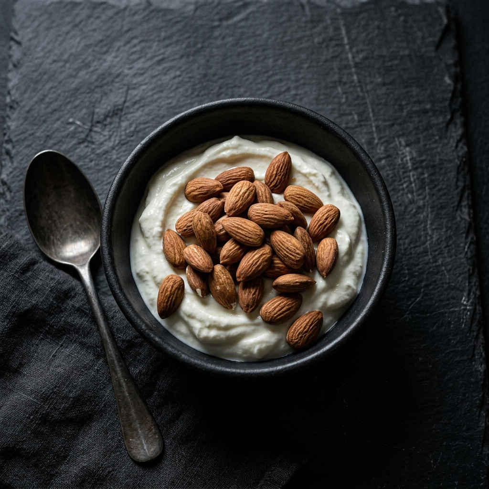
Z5 · GUSTARE
IAURT GRECESC
CU MIGDALE
Crunchy16:30⏱ 1 min
Calorii350
Proteine25G
Carbohidrați15G
Grăsimi20G
Ingrediente
Iaurt grecesc 2%300 g
Migdale crude30 g
Execuție
01Pune iaurtul într-un bol adânc.
02Aruncă migdalele întregi deasupra.
03Mănâncă direct, fără alte adăugiri.
PONTMigdalele au o densitate calorică mare, măsoară-le mereu înainte.
BOWL ASIATIC
CU VITĂ
Gust IntensPrânz⏱ 20 min
Calorii800
Proteine60G
Carbohidrați85G
Grăsimi20G
Ingrediente
Mușchi de vită tăiat fin200 g
Orez Jasmine80 g
Broccoli fiert150 g
Sos de soia1 lingură
Execuție
01Trage fâșiile de vită în tigaia foarte încinsă cu soia.
03Așează orezul, vita și broccoli-ul în bol. Gata.
PONTVita la wok se face în 2-3 minute. Nu o usca prea tare.
SALATĂ IMENSĂ
CU VITĂ
SățiosSeara⏱ 10 min
Calorii450
Proteine50G
Carbohidrați15G
Grăsimi20G
Ingrediente
Mușchi de vită rămas de la prânz150 g
Mix de salată verde200 g
Roșii cherry100 g
Castravete1 buc mare
Execuție
01Fă un munte de salată în cel mai mare bol din casă.
02Taie vita subțire și pune-o deasupra.
03Pune puțin oțet balsamic și savurează.
PONTFolosește carnea rămasă de la prânz ca să nu gătești din nou seara.
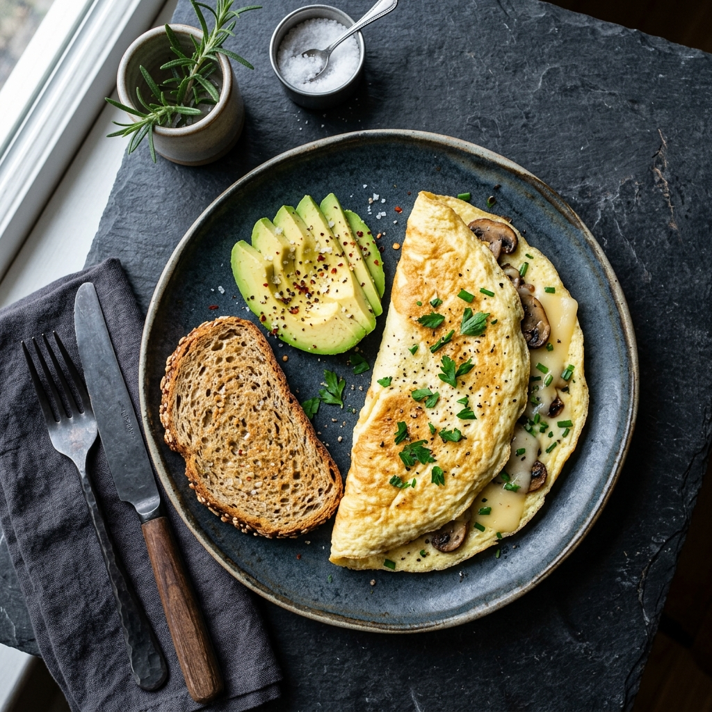
Z6 · MIC DEJUN
OMLETĂ CU MUȘCHI
DE PORC
RobustDimineața⏱ 15 min
Calorii650
Proteine55G
Carbohidrați20G
Grăsimi35G
Ingrediente
Ouă3 buc
Mușchiuleț de porc80 g
Baby spanac1 mână mare
Unt10 g
Execuție
01Trage carnea feliată în tigaie cu untul.
02Adaugă spanacul până se înmoaie, apoi toarnă ouăle bătute.
03Lasă omleta să se rumenească bine pe o parte.
PONTMușchiulețul de porc este extrem de slab (5% grăsime) și plin de proteină.
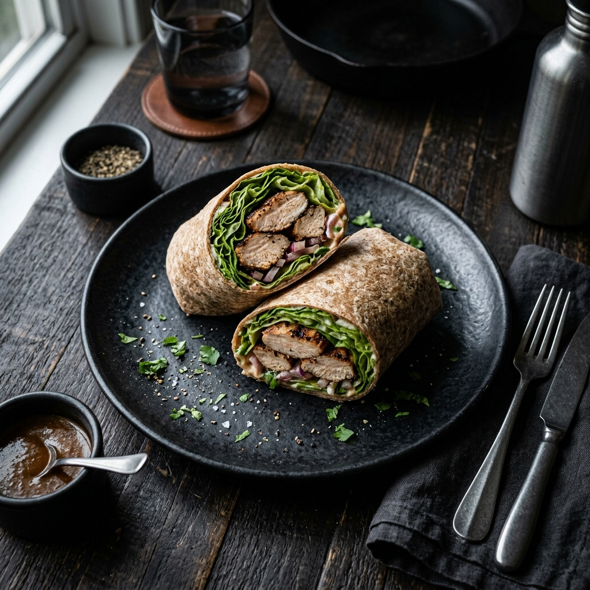
Z6 · GUSTARE
WRAP PROTEIC
CU PUI
Pe Fuga16:30⏱ 5 min
Calorii400
Proteine35G
Carbohidrați35G
Grăsimi10G
Ingrediente
Lipie integrală medie1 buc
Piept de pui feliat100 g
Salată verde1 mână
Iaurt grecesc 2%1 lingură
Execuție
01Încălzește lipia 10 secunde.
02Unge-o cu iaurt, pune carnea și salata.
03Rulează strâns. O poți lua și la pachet în mașină.
PONTPoți face acest wrap de dimineață și să-l ai la birou.
CURCAN LA CUPTOR
CU CARTOFI DULCI
DensitatePrânz⏱ 30 min
Calorii750
Proteine60G
Carbohidrați75G
Grăsimi15G
Ingrediente
Piept de curcan250 g
Cartof dulce250 g
Fasole verde150 g
Rozmarin, saredupă gust
Execuție
01Bagă carnea și cartofii dulci la cuptor pentru 25 min la 200°C.
02Trage fasolea verde la tigaie scurt.
03Savurează o masă imensă care îți umple rezervele de glicogen.
PONTCartoful dulce previne senzația de somnolență de la ora 15:00.

Z6 · CINĂ
COTLET DE PORC
CU SPARANGHEL
Fără CarbsSeara⏱ 20 min
Calorii550
Proteine60G
Carbohidrați10G
Grăsimi25G
Ingrediente
Cotlet de porc (fără os)250 g
Sparanghel150 g
Sare grunjoasădin plin
Ulei de măsline1/2 lingură
Execuție
01Unge carnea și sparanghelul cu ulei și pune-le pe grătar.
02Gătește cotletul 4-5 min pe fiecare parte.
03Masa asta refuză grăsimea și construiește mușchi curat.
PONTCotletul slab de porc e suculent și o alternativă excelentă la pui.

Z7 · MIC DEJUN
WRAP CU OUĂ
ȘI CURCAN FELIAT
Fast-Food VibeDimineața⏱ 10 min
Calorii650
Proteine50G
Carbohidrați40G
Grăsimi25G
Ingrediente
Lipie integrală mare1 buc
Ouă3 buc
Curcan feliat pur50 g
Cașcaval light30 g
Execuție
01Fă o omletă simplă din cele 3 ouă.
02Pune pe lipie feliile de curcan, omleta și cașcavalul ras.
03Rulează totul ca un burrito uriaș.
PONTMicul dejun perfect pentru weekend, când vrei senzația de fast-food.

Z7 · GUSTARE
PERLE DE BRÂNZĂ
CU NUCI PECAN
Textură16:30⏱ 1 min
Calorii350
Proteine25G
Carbohidrați10G
Grăsimi22G
Ingrediente
Perle de brânză (Cottage)200 g
Nuci Pecan coapte25 g
Piper negruun praf
Execuție
01Pune perlele de brânză într-un bol.
02Sparge nucile pecan deasupra și presară piper.
03Amestecul de texturi ține de foame perfect.
PONTVarianta sărată cu nuci susține testosteronul și oferă fibre esențiale.
PASTE INTEGRALE
CU TON
Italian VibePrânz⏱ 15 min
Calorii700
Proteine50G
Carbohidrați85G
Grăsimi15G
Ingrediente
Paste integrale100 g (crude)
Ton în suc propriu1 cutie (130g net)
Sos de roșii100 ml
Pătrunjel proaspătdin plin
Execuție
01Fierbe pastele al dente.
02Încălzește sosul de roșii cu tonul scurs.
03Amestecă pastele în sos și presară verdeață.
PONTPastele integrale se absorb mult mai lent decât cele albe.
COD LA CUPTOR
CU CAPERE
PremiumSeara⏱ 20 min
Calorii400
Proteine45G
Carbohidrați10G
Grăsimi15G
Ingrediente
Cod sau pește alb slab250 g
Spanac opărit150 g
Lămâiecâteva felii
Capere1 lingură
Execuție
01Pune peștele în tavă cu feliile de lămâie pe el.
02Gătește-l 15 minute la cuptor.
03Servește cu spanac cald și capere deasupra.
PONTO digestie complet liniștită pentru un somn adânc de weekend.